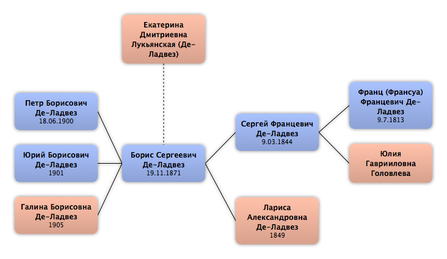

Домой
Домой
 Люди
Люди
 Семьи
Семьи
 Источники
Источники
 Диаграммы
Диаграммы
 Статистика
Статистика
Екатерина Дмитриевна Лукьянская

Контекст

Дополнительные имена
| Тип | Имя |
|---|---|
| Фамилия в браке | Де-Ладвез |
Родители
| Отец | Дата рождения | Мать | Дата рождения |
|---|
Родители и дети
| Партнёры | Дата рождения | Дети |
|---|---|---|
 Борис Сергеевич Де-Ладвез Борис Сергеевич Де-Ладвез
|
19.11.1871 |
Петр Борисович Де-Ладвез
Юрий Борисович Де-Ладвез
Галина Борисовна Де-Ладвез
|
События
Факты
Медиа
Примечание
Источники
Родство
| Имя | Степень родства | Дата рождения | Место рождения | Дата смерти | Место смерти |
|---|---|---|---|---|---|
| Партнёров | |||||
| Муж | 19.11.1871 | Москва, Россия | 25.04.1921 | Челябинск, Россия | |
| Дети | |||||
| Сын | 18.06.1900 | ||||
| Сын | 1901 | ||||
| Дочь | 1905 | ||||
| Родители мужа (жены) | |||||
| Тесть / Свёкор | 9.03.1844 | 23.09.1887 | |||
| Тёща / Свекровь | 1849 | 14.04.1906 | |||
| Шурины и невестки | |||||
| Шурин | 30.01.1870 | ||||
| Племянники и племянницы | |||||
| Муж племянницы | 31.12.1895 | г. Сороки Бессарабской губернии, Россия | 27.10.1937 | Оренб. обл, СССР | |
| Муж племянницы | 16.07.1900 | ||||